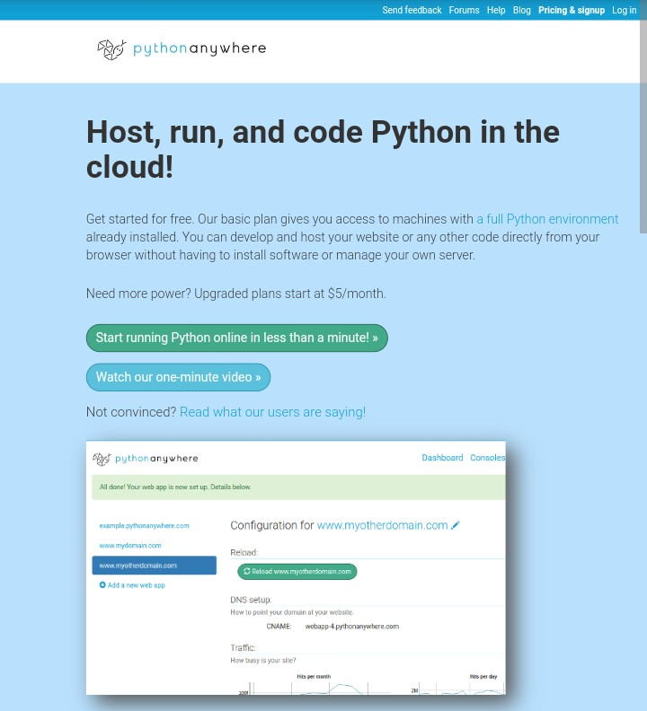
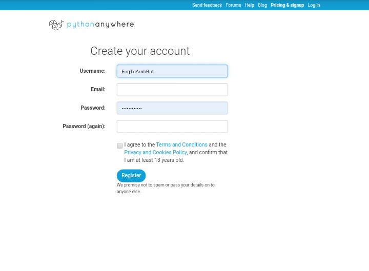
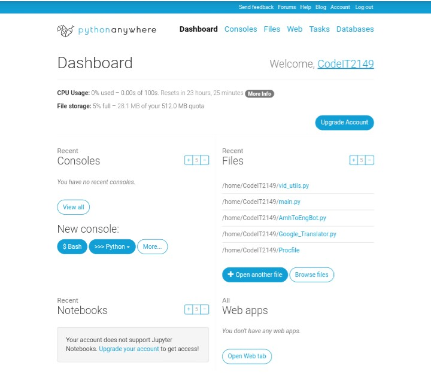
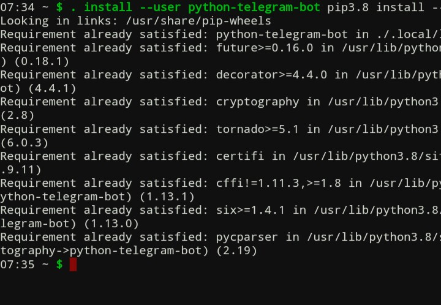
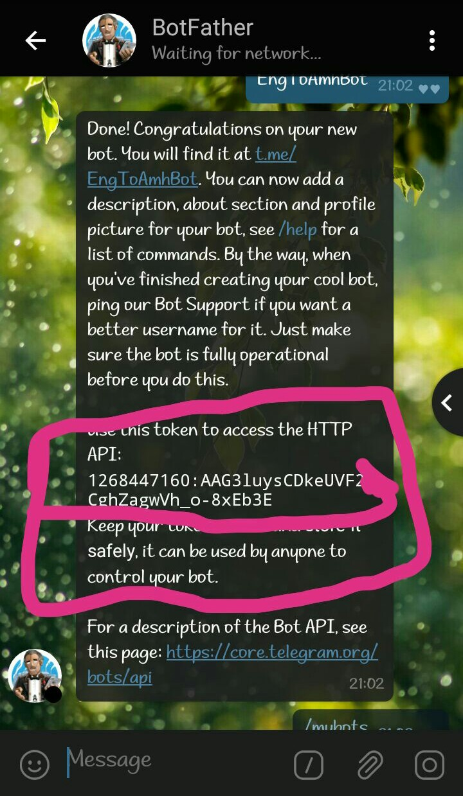
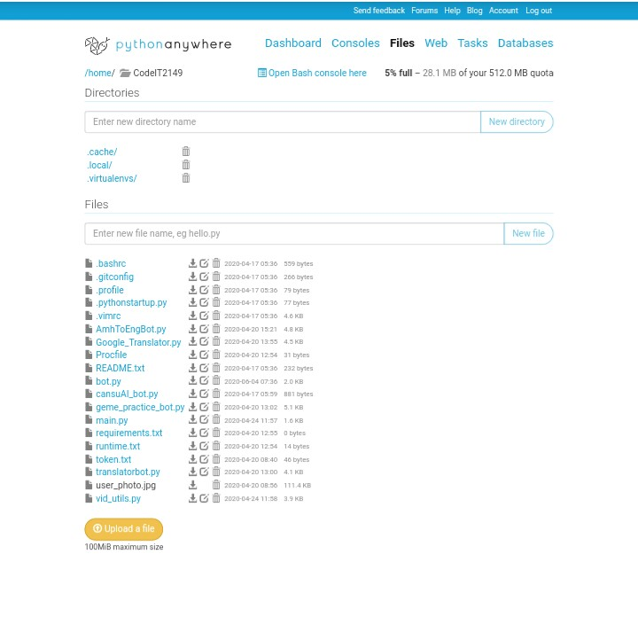
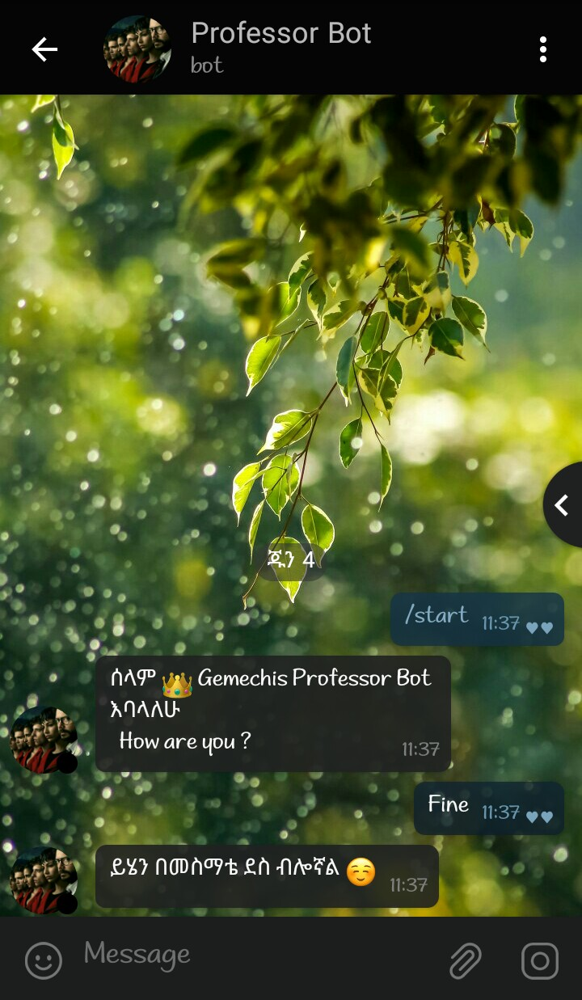

Introduction to Python-Telegram-Bot development
የቴለግራም Bot አሠራር ቀለል ባለ መልኩ በአማርኛ የተዘጋጀ
የቴሌግራም ቦት አሠራር ክፍል 1
መቼስ በአሁን ወቅት በተለያየ አጋጣሚ ሳናውቀውም AI የህይወታችን አንድ ክፍል ሆኗል። ከዝህም ውስጥ አንዱ ቡት ነው። የዕለት ተለት ኑሯችም ያቀሉልናል፣ ለምሳሌ ይሄ ቡት (APK D. bot) በ Play store ላይ የምገኙ የትኛውንም አፕ በቴሌግራም እንድናወርድ ያግዛል ፤ በተጨማሪም በሀገራችን ማውረድ የማንችለውን አፕ መጠቀም ያስችላል።
ይሄኛው ደግሞ (Andy Bot) በቴሌግራም ከእናንተ ጋ እንግሊዝኛ እያወራ ያስተምሯችኋል። ከዚህም በተጨማሪ የሀገር አቀፍ የፈተና ውጠታችንን ለማየት፣ የ ተለያዩ file ከድህረገፆች በቴሌግራም በኩል ለማውረድ፣ የ sport ውጤት ለማየት ፣ ቋንቋ ለመተርጎሞ .....ወዘተ ያገለግላሉ።
Step 1
Pre Requeriments
✅ Basic Python Knowledge የቴሌግራም ቡት ለመስራት ከምንጠቀምባቸው የፕርግራምንግ ቋንቋዎች ውስጥ Python ተመራጭ ነው። የቻናላችን ላይ የተጨማር ያንብቡ
✅ Basic Python-Telegram-Bot በPython የተሌግራም ቡት ለመስራት ካሉት Libraryዎች telepot እና python-telegram-bot በብዙዎች ተመራጭ ናቸው። በዚህ tutorial የምንጠቀመው python-telegram-bot ነው።
✅Hosting Server ለቡታችን የምንፅፈውን ኮድ 24 ሰዓት run የምያደርጉ ሰርቨሮች ናቸው። በሀገራችን እስከ አሁን ይሄን አገልግሎት የምሰጥ ድርጅት ባይኖርም ከዚህ በታች የተጠቀሱት መጠቀም ትችላላቹ። አብዛኛዎቹ ብር ያስከፍላሉ።
✅ python anywhere
✅ Heroku
✅ Amazon Web server
✅Google App Engine ከዚህ ሊንክ ተጨማሪ ያንብቡ
Step 2
ለዚህ ፁሁፍ Pythonanywhere እጠቀማለው። ስለዝህ በመጀመሪያ pythonanwhere.com ላይ በመሄድ account ይክፈቱ።
Step 3
Pythonanywhere.com ላይ በመሄድ account ይክፈቱ።
Step 4
በመቀጠል New Console ከምለው ስር "Bash" የምለውን በመጫን terminal እንከፍታል፣ ይሄ ሰርቬሩ ላይ የምንፈልገውን የምንጭንበት ነው።
በመቀጠል terminal ላይ " pip3.8 install --user python-telegram-bot " ብለን እንፅፋለን።

Next
pip3.8 install --user python-telegram-bot

Step 5
ሰርቨሩ ላይ በትክክል መጫናችንን ካረጋገጥን በኋላ ወደ ቴሌግራም በመመለስ እና በBotfather አድስ ቡት create እናደርጋለን። የቡታችንን API Token እንወስዳለን
1082874895:AAF9egvWgiGdxBgV1MFdFkjVEuX-w7IVJko

Step 6
ይሄንን ኮድ በማውረድ ስሙን "yourbotname.py" በመቀየር ሴቭ ማድረግ።
የ Bot token ወደ ራሳችሁ መቀየር እንዳት ረሱ።
import logging from telegram import (ReplyKeyboardMarkup, ReplyKeyboardRemove) from telegram.ext import (Updater, CommandHandler, MessageHandler, Filters,ConversationHandler) # Enable logging logging.basicConfig(format='%(asctime)s - %(name)s - %(levelname)s - %(message)s', level=logging.INFO) logger = logging.getLogger(__name__) IN= range(1) def start(update, context): #server ላይ History ለመመዝገብ logger.info("Mr of %s: start conversations", update.message.from_user.first_name) #Welcom message context.bot.send_message(chat_id=update.message.chat_id, text="ሰላም " +update.message.from_user.first_name+ " Professor Bot እባላለሁ\n How are you ?") return IN def main_function(update,context): global text text = update.message.text #rep'y message of user send some text but text is not "/start"" if text=! "/start"': update.message.reply_text("ይሄን በመስማቴ ደስ ብሎኛል ☺️ ") #ተጨማር function def error(update, context): """Log Errors caused by Updates.""" logger.warning('Update "%s" caused error "%s"', update, context.error) def cancel(update, context): user = update.message.from_user logger.info("User %s canceled the conversation.", user.first_name) update.message.reply_text('Bye! I hope we can talk again some day.') #Main function def main(): # የእርሶን bot tokem ያስቀምጡ updater = Updater("1082874895:AAF9egvWg7GdxBgV1MFdFkjVEuXw7IVJko", use_context=True) # Get the dispatcher to register handlers dp = updater.dispatcher # Add conversation handler with the states GENDER, PHOTO, LOCATION and BIO conv_handler = ConversationHandler( entry_points=[CommandHandler('start', start)], states={ IN: [MessageHandler(Filters.text , main_function)], }, fallbacks=[CommandHandler('cancel', cancel)] ,) dp.add_handler(conv_handler) # log all errors dp.add_error_handler(error) # Start the Bot updater.start_polling() # Run the bot until you press Ctrl-C or the process receives SIGINT, # SIGTERM or SIGABRT. This should be used most of the time, since # start_polling() is non-blocking and will stop the bot gracefully. updater.idle() print("the bot is started ....)") if __name__ == '__main__': main()
Final Step
ኮዱን ወደ Pythonanywhere Upload ያድርጉ። በመቀጠል run በማድረግ። ወደ ቡታችን በመመለስ "/start" ብለን እናስጀምራለን። ለዝህ tutorial የፆፍኩት ስማቹን ጠርቶ ሰላምታ የምሰጣችሁ ቡት ነው። ሞክሩት !!
Start your Bot
 
Gemechis Elias
Student | Tech blogger | Developer
Hopefully This is Article helped you or I hope you got something new from this blog!
Notice that this is just to give you general hint please read further documentation on this topic